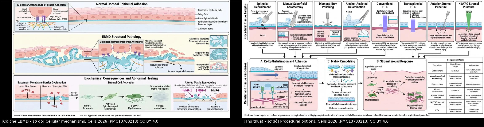
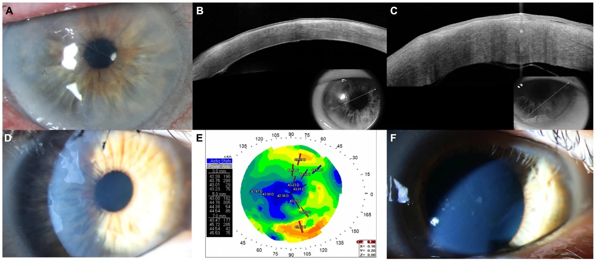
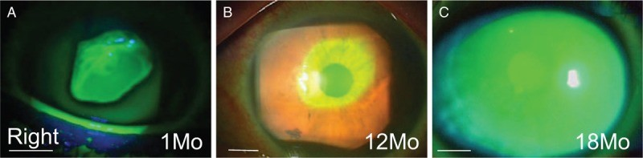
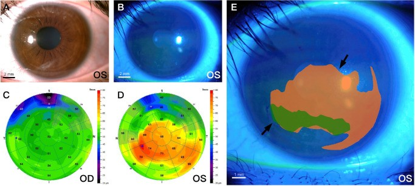
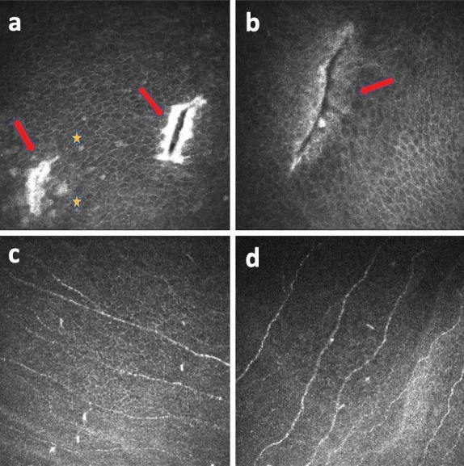

3261 — Bong biểu mô giác mạc tái diễn / Recurrent corneal erosion syndrome (RCES)
Tags: pattern:bong-bieu-mo pattern:trot-bieu-mo-tai-dien pattern:manh-inhien pattern:duong-ban-do pattern:mat-mot-ben pattern:dau-khi-thuc-giac vung:mat vung:giac-mac vung:bieu-mo-giac-mac protocol:den-khe protocol:fluorescein protocol:AS-OCT protocol:CET-mapping protocol:IVCM protocol:topography incidentaloma:khong
Mức chắc chắn (certainty): tổng hợp y văn (literature synthesis) — dựng từ một tổng quan cơ chế–điều trị 2026 về RCES trên loạn dưỡng màng đáy (PMC13703213), một nghiên cứu bắt cặp AS-OCT–fluorescein 15 bệnh nhân (PMC13077718), một phân tích sống còn theo độ sâu PTK 70 mắt (PMC11724826), một phân tích gộp PTK 700 mắt (PMC10614516), một loạt 58 mắt về nghiệm pháp quệt giác mạc (PMC9473707), một đoàn hệ toàn quốc 239.854 bệnh nhân đái tháo đường (PMC7311018), một khảo sát yếu tố khởi phát 40 bệnh nhân (PMC12733406) và một loạt IVCM sau chọc mô đệm trước (PMC10711589). Nhóm không có bệnh nhân của mình; chỗ chưa đủ chắc ghi "chưa rõ". Không ghi tên tác giả — attribution = tạp chí + năm + PMCID.
Câu chốt: bệnh nhân đau như dao cắt ngay khi mở mắt buổi sáng, chảy nước mắt, sợ ánh sáng, rồi hết trong vài giờ — và lặp lại đúng vị trí đó nhiều lần trong nhiều tháng–nhiều năm — là trợt biểu mô tái diễn (recurrent corneal erosion syndrome, RCES), không phải "khô mắt". Bốn số phải nhớ: 48,2% số mắt RCES trong một loạt 58 mắt có thủ phạm là vết mổ phaco trong giác mạc; EBMD + chấn thương xước bề mặt là hai nguyên nhân hay gặp nhất trong loạt 100 bệnh nhân; PTK tái phát 18% (129/700 mắt, 95% CI 13–24%) nhưng bóc + mài đầu kim cương chỉ 4,1% (2/49) và ASP 29,4% (10/34); và bề dày biểu mô trung tâm bình thường 52–55 ± 3–4 µm, nên vùng ≥ 60 µm trên bản đồ CET mới là vùng bệnh cần đốt — diện tích đó lớn hơn vùng fluorescein trung vị 9,26 mm².
1. Tổng quan bệnh học – cơ chế hình ảnh (TẠI SAO)
1.1 Vì sao biểu mô bám được — và vì sao nó bong đúng ở lớp màng đáy
- Bộ máy bám (adhesion complex) gồm 4 tầng: hemidesmosome của tế bào đáy (integrin α6β4 + collagen XVII/BP180) → laminin-332 → màng đáy biểu mô (epithelial basement membrane, EBM) với mạng collagen IV → sợi neo collagen VII cắm vào lớp Bowman/mô đệm trước (PMC13703213). Mặt phẳng yếu nhất khi bị xé chính là giữa EBM và Bowman, nên tổn thương luôn tách ở cùng một lớp, không sâu hơn.
- Trong EBMD (epithelial basement membrane dystrophy), EBM dày lên và xếp nhiều lớp, ăn lấn vào trong biểu mô; xuất hiện vi nang trong biểu mô và tế bào đáy nằm trên một màng đáy dị dạng, chân hemidesmosome mất neo (PMC13703213). Đây là lý do hình ảnh có 3 dạng kinh điển: mảng bản đồ (map) do lá màng đáy rộng dưới biểu mô, vân tay (fingerprint) do nếp gấp màng đáy song song, chấm (dot) do vi nang.
- Vì sao EBMD lại "ẩn" trên đèn khe: các lá màng đáy chỉ dày vài µm, trong suốt, chiết suất gần bằng biểu mô; chúng không cản quang, không bắt fluorescein. Vì vậy fluorescein âm là chuyện thường — nhiều mắt EBMD chỉ lộ ra khi soi ngược sáng (retroillumination), khi quệt ẩm, hoặc khi AS-OCT đo bề dày biểu mô.
- Vì sao đau đúng lúc thức giấc: khi nhắm mắt, trao đổi nước mắt giảm, biểu mô ngậm nước nhẹ, lực bám yếu nhất; ban đêm mi mắt trượt (kể cả pha chuyển động mắt nhanh) và mi trên dính vào biểu mô; lúc mở mắt, lực kéo cơ học bóc cả tấm biểu mô ra khỏi EBM → đau chói tức thì, chảy nước mắt, sợ ánh sáng, rồi tái biểu mô hóa nhanh trong vài giờ (PMC12733406). Triệu chứng nặng hơn khi mệt và khi lớn tuổi trong khảo sát 40 bệnh nhân.
- Vì sao tái phát đúng chỗ: sau chấn thương xước hoặc sau phẫu thuật, EBM + hemidesmosome + sợi neo phải tái lập trong nhiều tuần đến nhiều tháng; vùng tổn thương giữ "điểm yếu" vĩnh viễn nếu màng mới không hoàn chỉnh (PMC13703213). Vì thế RCES sau xước móng tay có thể tái phát 12 tháng sau đúng vị trí cũ và cùng kích thước, cùng hình dạng (Hình ca 4 dưới đây).
1.2 Vì sao "không thấy gì" mà vẫn có bệnh — và số liệu định lượng cốt lõi
- Trợt "ẩn" (occult erosion): tấm biểu mô bong còn dính một phần, nhô lên khỏi màng phim nước mắt nên không giữ fluorescein — gọi là "negative staining". Trong loạt 58 mắt, nghiệm pháp quệt giác mạc (corneal sweep test, CST) — quệt đầu tăm bông ẩm lên bề mặt để bóc tấm biểu mô lỏng — cần thiết ở 49/58 mắt (84,5%), và phát hiện 34 mắt trợt ẩn có giác mạc trông bình thường (PMC9473707). Đây là mẹo khám quyết định: nghi RCES mà fluorescein âm → quệt bằng tăm bông, không kết luận "giác mạc bình thường".
- Vết mổ phaco là "điểm yếu" bị bỏ quên: cũng trong loạt 58 mắt, phaco trong giác mạc (clear corneal cataract surgery) là cơ chế hay gặp nhất: 28 mắt (48,2%); 20 mắt (71,4%) chỉ có triệu chứng sau mổ, và cả 20 mắt đều trợt đúng trên vết mổ trong giác mạc (PMC9473707). Vì vậy hỏi tiền sử mổ phaco là câu hỏi bắt buộc ở mọi "đau mắt buổi sáng" — kể cả khi mổ đã nhiều năm.
- EBMD là bệnh nền, không phải biến chứng: trong loạt 100 bệnh nhân RCES, chấn thương xước bề mặt và EBMD là hai nguyên nhân xác định được hay gặp nhất (PMC13703213). EBMD có thể hoàn toàn không triệu chứng, chỉ mờ thị lực dao động — hoặc là "bệ phóng" cho trợt tái diễn.
- Đái tháo đường làm tăng nguy cơ: đoàn hệ toàn quốc Đài Loan 239.854 người ĐTĐ so với 239.854 người ghép cặp: tỷ lệ mới mắc RCES 5,87 vs 4,23/10.000 người-năm, aHR 1,35 (95% CI 1,24–1,48) sau hiệu chỉnh tăng huyết áp, rối loạn lipid, bệnh thận mạn và khô mắt (PMC7311018). Con số 4,23/10.000 người-năm là ước lượng nền tốt nhất về gánh nặng cộng đồng của bệnh.
- Yếu tố khởi phát trong ngày trước cơn: khảo sát 40 bệnh nhân — mệt nhiều 32,5%, uống rượu 30%, chấn thương 30%, hút thuốc 20%, vận động mạnh 5%; triệu chứng nặng hơn ở người lớn tuổi và khi mệt (PMC12733406). Cơ chế hợp lý: rượu–mệt → giảm chớp, giảm tiết nước mắt, tăng ngậm nước biểu mô ban đêm → lực bám tụt.
- Vì sao AS-OCT "nhìn thấy" bệnh: tín hiệu OCT sinh ra từ chênh chiết suất. Màng đáy dày/xơ hóa và biểu mô lỏng, phù tạo dải tăng hồi âm dưới biểu mô và bề mặt không đều. Trong 18 bệnh nhân được chụp AS-OCT: tăng hồi âm mô đệm trước 94,4%, phù biểu mô 61,1%, bề mặt biểu mô vỡ vụn không đều 50,0%, nang trong biểu mô 44,4%, màng đáy trong biểu mô 33,3%, không xác định được màng đáy 11,1%; mờ thị lực và giảm thị lực gắn với việc MẤT hình ảnh màng đáy trên OCT (PMC12733406).
- Ngưỡng bề dày biểu mô: bề dày biểu mô trung tâm bình thường 52–55 ± 3–4 µm; lấy ≥ 60 µm (tăng ~10%, tương đương 1,5–2 SD) làm ngưỡng "vùng bệnh" trên bản đồ bề dày biểu mô giác mạc (corneal epithelial thickness, CET) — máy Optovue tô vàng đúng vùng này (PMC13077718). Bản đồ quét đường kính 9 mm, phân giải 5 µm chiều sâu / 15 µm ngang.
2. Mẫu hình + chẩn đoán phân biệt theo vị trí (gamut)
Mẫu hình chính: trợt biểu mô khu trú, bờ rõ, tái diễn đúng một vùng + đau khi thức giấc + fluorescein có thể ÂM.
- Trung tâm / cạnh trung tâm (2–5 mm): EBMD, di chứng xước móng tay/giấy, sau LASIK/PRK, loét do kính tiếp xúc, loét thần kinh dưỡng, viêm giác mạc HSV (dendrite), loét nhiễm khuẩn/nấm.
- 1/3 dưới – cạnh dưới: chấn thương do dị vật, hở mi/lagophthalmos, bệnh mi–lông mi (lông xiêu, nối mi), trợt do ĐTĐ, khô mắt nặng.
- Trên vết mổ trong giác mạc (sau phaco): trợt trên vết mổ — vị trí thẳng trên đường rạch, xuất hiện nhiều tuần–nhiều năm sau mổ (PMC9473707).
- Rìa / chu biên: thiếu hụt tế bào gốc rìa (LSCD), pterygium, loét rìa — trợt lan từ rìa vào, có tân mạch + mờ đục, không "tái diễn đúng một điểm".
- Toàn bộ bề mặt / nhiều ổ: bỏng hóa chất, hội chứng Stevens–Johnson, bệnh mắt khô miễn dịch, nhiễm trùng lan — không phải RCES.
3. Bảng so sánh phân biệt (ma trận đối chiếu)
| Thực thể (entity) | Hình ảnh điển hình | Chốt vào (rule-in) | Chốt loại (rule-out) | Gợi ý xác nhận |
|---|---|---|---|---|
| RCES trên EBMD | Đường bản đồ/chấm/vân tay trong biểu mô, hai mắt, soi ngược sáng rõ; AS-OCT: màng đáy dày tăng hồi âm dưới biểu mô, bề mặt không đều, CET ≥ 60 µm từng vùng | Tái phát nhiều đợt ở NHIỀU vị trí hoặc hai mắt + đường bản đồ ở mắt đối bên + không có chấn thương rõ | Một ổ duy nhất đúng vết xước cũ, không có đường bản đồ → loại EBMD | Đèn khe + soi ngược sáng; AS-OCT CET map; khám mắt đối bên |
| RCES sau chấn thương xước | Một ổ khu trú, đúng vị trí xước, cùng kích thước/hình dạng mỗi lần tái phát; mô đệm dưới có thể tăng hồi âm khu trú | Tiền sử xước móng tay/giấy/dị vật + tái phát đúng một chỗ + mắt đối bên bình thường | Tổn thương lan rộng, nhiều ổ, hai mắt → loại | Hỏi kỹ chấn thương; quệt tăm bông tìm tấm biểu mô lỏng |
| RCES trên vết mổ phaco | Trợt thẳng trên đường rạch giác mạc trong, thường 1/3 dưới – cạnh dưới; vết mổ mờ nhẹ | Tiền sử phaco (kể cả nhiều năm) + ổ trợt đúng vết mổ + đau buổi sáng | Không có tiền sử mổ → loại | Đèn khe tìm vết mổ trong giác mạc; AS-OCT vùng mô đệm trước tăng hồi âm |
| Loét nhiễm trùng (vi khuẩn/nấm/Acanthamoeba) | Thâm nhiễm mô đệm dưới ổ loét, bờ không đều, mủ tiền phòng có thể; mờ đục lan | Đau liên tục tăng dần, không tự hết trong ngày, thâm nhiễm + phản ứng tiền phòng | Trợt sạch, hết trong vài giờ, tái diễn đúng chỗ, không thâm nhiễm → loại | Cạo/ cấy giác mạc trước khi dùng corticoid; soi tươi/KOH; IVCM |
| Loét thần kinh dưỡng (NK) | Khuyết biểu mô bờ cuộn, khô, mô đệm mờ, không đau | Giảm cảm giác giác mạc, tiền sử HSV/VZV/phẫu thuật/mắt khô nặng | Đau dữ dội từng cơn khi thức giấc + cảm giác bình thường → loại | Esthesiometry (cotton wisp/esthesiometer); IVCM mật độ sợi thần kinh dưới đáy |
| Khô mắt / viêm giác mạc chấm nông (SPK) | Nhiều chấm nhuộm fluorescein rải rác 1/3 dưới, hai mắt, đối xứng; TBUT ngắn | Khô hai mắt, SPK rải rác, không có một ổ khu trú tái diễn | Một ổ khu trú, đúng vị trí, một bên → loại (nhưng có thể phối hợp) | TBUT, Schirmer, nghiệm pháp nhuộm; hỏi thuốc/khô miệng |
| Viêm giác mạc HSV | Nhánh (dendrite) hoặc loét địa đồ (geographic), đầu tận cùng phình; giảm cảm giác | Dendrite bờ nhuộm fluorescein rõ + tiền sử tái phát HSV | Không có nhánh, trợt bờ tròn đúng điểm xước → loại | Nhuộm fluorescein; PCR dịch ổ loét nếu nghi; không dùng corticoid đơn thuần |
| Thiếu hụt tế bào gốc rìa (LSCD) | Tân mạch + mờ đục từ rìa lan vào, biểu mô không đều, chấm nhuộm rìa | Tổn thương bắt đầu từ rìa, tiền sử bỏng/ghép/kính tiếp xúc dài | Trợt trung tâm, rìa bình thường → loại | Soi rìa 360°, IVCM rìa, xét nghiệm LSCD |
| Bong biểu mô do bọng nước / sau mổ khúc xạ | Màng biểu mô nhăn, trượt khi mi chớp, vùng đảo sau LASIK; AS-OCT thấy mặt cắt vạt | Tiền sử LASIK/PRK/RK + trợt trong vùng vạt, khởi phát vài tuần–vài tháng sau mổ | Không tiền sử mổ khúc xạ → loại | AS-OCT vết vạt; hỏi mổ khúc xạ kể cả 10–20 năm trước |
- Ảnh ghép đối chiếu — cơ chế (trên) và lựa chọn thủ thuật (dưới) dùng để chọn đúng "tầng đích": bóc/delamination chỉ chạm EBM, còn mài đầu kim cương/PTK chạm Bowman + mô đệm trước, và chọc mô đệm trước tạo sẹo neo khu trú:

- Ảnh: trên — bộ máy bám bình thường vs màng đáy nhiều lớp + mất neo hemidesmosome; dưới — tầng đích của từng thủ thuật (bóc biểu mô/alcohol delamination giữ Bowman; mài kim cương/PTK phá Bowman + mô đệm trước; chọc mô đệm tạo sẹo xơ). Nguồn Cells 2026 (PMC13703213), CC BY 4.0, nguyên bản, ghép bằng
tools/make_composite.py.
4. Protocol khám/chụp + ngưỡng xử trí
Bước 1 — hỏi bệnh (quyết định hơn mọi máy): đau ngay khi thức giấc? hết trong ngày? tái diễn đúng một chỗ? tiền sử xước móng tay/giấy/dị vật, phaco, LASIK/PRK, ĐTĐ, HSV, kính tiếp xúc, nối mi/lông xiêu, mệt/rượu trước cơn.
Bước 2 — khám đèn khe theo trình tự cố định:
- Fluorescein + ánh sáng cobalt: tìm ổ trợt khu trú và "negative staining" (tấm biểu mô nhô, không giữ thuốc).
- Soi ngược sáng (retroillumination) và khe sáng hẹp quét bề mặt: tìm đường bản đồ/chấm/vân tay, nếp biểu mô.
- Nghiệm pháp quệt giác mạc (CST): tăm bông ẩm quệt nhẹ từ trung tâm ra ngoài ở vùng nghi — tấm biểu mô lỏng bong ra = dương tính; làm sau khi đã chụp ảnh/đo để không phá tổn thương.
- Khám mắt đối bên (EBMD thường hai bên), bờ mi, lông xiêu, đóng mi không kín, TBUT/Schirmer, cảm giác giác mạc (loại loét thần kinh dưỡng).
- Đo thị lực + khúc xạ: EBMD gây loạn thị không đều, thị lực dao động.
Bước 3 — chẩn đoán hình ảnh (khi cần định lượng hoặc trước can thiệp):
- AS-OCT bản đồ bề dày biểu mô (CET map, 9 mm): tìm vùng ≥ 60 µm (nền 52–55 ± 3–4 µm), dải tăng hồi âm dưới biểu mô, bề mặt không đều, nang trong biểu mô. Đây là công cụ duy nhất đo được "vùng bệnh" rộng hơn vùng fluorescein: trong 15 bệnh nhân, diện tích theo CET lớn hơn fluorescein trung vị 9,26 mm² (95% CI 5,87–14,42), hệ số góc hồi quy 1,631 — dùng để lập kế hoạch vùng đốt PTK và tránh đốt thiếu (PMC13077718).
- IVCM (soi đồng tiêu in vivo): thấy mật độ/độ phản xạ sợi thần kinh dưới đáy, tế bào tua, sẹo sau chọc mô đệm; hữu ích khi nghi loét thần kinh dưỡng hoặc theo dõi lành thương (PMC10711589).
- Bản đồ giác mạc (topography): loạn thị không đều do EBMD; bắt buộc trước khi tính công suất IOL — EBMD làm sai số IOL và mờ sau mổ.
- Không cần CT/MRI. Siêu âm chỉ dùng khi không đánh giá được bề mặt (mủ, phù nặng).
Bảng ngưỡng xử trí (theo bậc thang, dựa trên bằng chứng hiện có):
| Bậc | Can thiệp | Ngưỡng/kết quả định lượng |
|---|---|---|
| 1 | Dầu bôi trơn không chất bảo quản + mỡ/gel ban đêm, dung dịch muối 5% | 5% NaCl mỡ 2 lần/ngày × 30 ngày: 21/21 mắt tái biểu mô hóa và hết triệu chứng trong một nghiên cứu không đối chứng (PMC13703213) |
| 2 | Kính tiếp xúc băng (bandage contact lens) 3 tháng | RCT 29 bệnh nhân: lành hoàn toàn 71% (BCL) vs 73% (chỉ bôi trơn) ở 3 tháng, nhưng triệu chứng hết sớm hơn ở nhóm BCL (trung bình 5 ngày) |
| 3 | Bóc biểu mô (debridement), alcohol delamination | Tái phát 4,1% (2/49) trong loạt bóc + mài đầu kim cương 91 mắt; mờ nhẹ tồn tại 14,3% (7/49) |
| 4 | Mài đầu kim cương (diamond burr) hoặc PTK | PTK: tái phát 18% (129/700; 13–24%) — chấn thương 17% (9–24), loạn dưỡng 22% (11–32); biến chứng 13% (mờ dưới biểu mô, lệch khúc xạ xa, giảm thị lực có chỉnh) (PMC10614516) |
| 4b | Độ sâu PTK | ≥ 15 µm (trung bình 16,85 ± 3,4 µm): 17/20 mắt (85%) không tái phát, sống không triệu chứng 28,1 ± 2,1 tháng; < 15 µm (trung bình 9,26 ± 1,5 µm) kém hơn rõ (p = 0,036) (PMC11724826) |
| 5 | Chọc mô đệm trước (anterior stromal puncture, ASP) | 29,4% (10/34) tái phát — chỉ đặt NGOÀI trục quang, tránh vùng trung tâm 3 mm; tạo sẹo xơ neo tại chỗ |
| 6 | Ghép màng ối (amnion) / ghép giác mạc | Khi trợt không lành > 2–4 tuần, mô đệm mỏng, nguy cơ thủng, hoặc EBMD lan tỏa gây mờ trục quang |
So sánh 3 thủ thuật hay được chọn (từ bảng tổng hợp của PMC13703213): ASP 29,4% (10/34), mài kim cương 9,1% (3/33), PTK 10,0% (3/30) tái phát — không có thử nghiệm ngẫu nhiên so sánh trực tiếp; thời gian theo dõi trung vị khác nhau (ASP 189 ngày, mài 64 ngày, PTK 542 ngày), nên không đọc bảng này như "xếp hạng".
flowchart TD
A[Đau choi khi thức giấc + tái diễn đúng một vị trí] --> B{Fluorescein thấy ổ trợt?}
B -->|Không| C[Soi ngược sáng + nghiệm pháp quệt tăm bông]
C --> D{Tấm biểu mô lỏng bong ra?}
D -->|Có| E[Chẩn đoán RCES]
D -->|Không| F[Loại trừ: khô mắt, HSV, loét thần kinh, LSCD]
B -->|Có| E
E --> G[Khám mắt đối bên + bờ mi + cảm giác giác mạc]
G --> H{Có EBMD hoặc nhiều ổ hoặc hai mắt?}
H -->|Có| I[AS-OCT CET map: vùng ≥ 60 µm + topography]
H -->|Không| J[RCES sau chấn thương hoặc sau vết mổ phaco]
I --> K[Điều trị bậc thang: bôi trơn ban đêm + mỡ/gel]
J --> K
K --> L{Còn triệu chứng sau 4-8 tuần?}
L -->|Không| M[Theo dõi 3-6 tháng, dặn tái phát]
L -->|Có| N[Kính tiếp xúc băng 3 tháng hoặc bóc biểu mô]
N --> O{Còn tái phát?}
O -->|Không| M
O -->|Có| P[Chọn thủ thuật theo tầng đích: mài kim cương, PTK ≥ 15 µm, ASP ngoài trục quang]
P --> Q[Tái phát sau 2 lần can thiệp?]
Q -->|Có| R[Xem lại chẩn đoán + màng ối/ghép nếu mô đệm mỏng]
Q -->|Không| M
5. Biến thể bình thường và cạm bẫy
- "Fluorescein âm = không bệnh" — sai. Trợt ẩn gặp ở 34/58 mắt trong loạt có CST; tấm biểu mô lỏng không giữ thuốc. Nghi lâm sàng → quệt tăm bông, soi ngược sáng, AS-OCT.
- Đường bản đồ bị đọc thành "khô mắt" — EBMD không đau, không nhuộm, lại hay hai bên; nếu chỉ điều trị khô mắt thì trợt vẫn tái phát. Luôn soi ngược sáng và khám mắt đối bên.
- Bỏ sót vết mổ phaco — 20/20 mắt trong loạt CST trợt đúng vết mổ trong giác mạc, có khi nhiều năm sau mổ; không hỏi tiền sử là bỏ chẩn đoán.
- Bóc biểu mô quá tay — bóc rộng, chà mạnh làm mất EBM còn lại, tăng mờ dưới biểu mô (14,3% trong loạt bóc + mài kim cương) và loạn thị. Chỉ bóc vùng biểu mô lỏng, không "đánh bóng" toàn bộ.
- Đo bề dày biểu mô khi đang phù — 61,1% mắt RCES có phù biểu mô: số đo dày giả, dễ đốt quá sâu. Đo lại khi hết phù, và ≥ 60 µm chỉ là ngưỡng gợi ý, không phải chẩn đoán.
- Nhầm với loét thần kinh dưỡng — bệnh nhân không đau, bờ loét cuộn, giảm cảm giác: điều trị ngược hẳn (bảo vệ, cenegermin, tránh bóc lặp). Bắt buộc khám cảm giác trước khi leo thang thủ thuật.
- Chẩn đoán "viêm giác mạc do kính tiếp xúc" khi thực ra RCES — kính là yếu tố làm nặng, không phải nguyên nhân; cần ngừng kính + đánh giá EBM.
- Đái tháo đường làm tăng nguy cơ 1,35 lần: kiểm soát đường huyết và khám mắt định kỳ là một phần điều trị.
- Bẫy "thỏa mãn tìm kiếm": thấy ổ trợt là dừng → bỏ sót EBMD mắt đối bên, hở mi, lông xiêu, loét nhiễm trùng bên dưới (thâm nhiễm mô đệm!). Luôn lật mi, khám bờ mi, nhuộm lại sau khi bóc.
- Đừng hứa "khỏi hẳn": RCES là bệnh tái phát nhiều năm, không có mốc "khỏi"; tư vấn đúng giúp bệnh nhân chấp nhận theo dõi thay vì chạy nhiều nơi.
6. Tự lượng giá — Blind Quiz ngay trên trang tĩnh
Ca 1 — nam 42 tuổi, đau chói mắt phải mỗi sáng, 3 tháng nay

- Bối cảnh: đau ngay khi mở mắt, chảy nước mắt, hết sau 1–2 giờ; không chấn thương, không đeo kính; khám thấy vài đường mảnh cong trên giác mạc, fluorescein âm.
- Câu hỏi: (1) Mô tả ba dạng hình thái trên ảnh và cơ chế của từng dạng? (2) Hai chẩn đoán phân biệt? (3) Vì sao fluorescein âm mà vẫn có bệnh?
Bấm để hiện đáp án (findings + chẩn đoán)
- Dấu hiệu: (A) vân tay — đường mảnh, cong, song song; (D) mảng bản đồ — đám mờ bờ không đều; (B, C) AS-OCT — dải tăng hồi âm dưới biểu mô, biểu mô dày không đều, bề mặt gồ ghề; (E) topography — loạn thị không đều.
- Chẩn đoán: loạn dưỡng màng đáy biểu mô (EBMD) — màng đáy nhiều lớp tạo mảng/vân, vi nang tạo chấm; fluorescein âm vì màng đáy trong suốt, không bắt thuốc và biểu mô chưa bong ở lần khám này.
- Phân biệt: khô mắt thể chấm nông (nhiều chấm rải rác, hai mắt) và loét thần kinh dưỡng (giảm cảm giác, không đau).
- Xử trí: mỡ/gel ban đêm + dầu bôi trơn không bảo quản; nếu tái phát nhiều → AS-OCT CET map, cân nhắc PTK ≥ 15 µm hoặc mài kim cương.
- Nguồn ảnh: Cells 2026, Fig. 1, PMC13703213, CC BY 4.0, nguyên bản.
Ca 2 — nam 56 tuổi, tái phát đúng một chỗ sau xước móng tay

- Bối cảnh: xước móng tay vào giác mạc; 1 tháng sau còn ổ trợt trung tâm; 12 tháng sau tái phát đúng vị trí, cùng kích thước; sau đó đeo kính tiếp xúc băng + bôi trơn.
- Câu hỏi: (1) Vì sao tái phát đúng cùng vị trí và cùng hình dạng? (2) Hai yếu tố làm nặng thêm tình trạng này? (3) Kết cục trên ảnh C nói lên điều gì về thời gian điều trị?
Bấm để hiện đáp án (findings + chẩn đoán)
- Dấu hiệu: (A) ổ trợt trung tâm, bờ rõ sau chấn thương; (B) 12 tháng sau, ổ trợt cùng vị trí, cùng dạng; (C) sau 12 tháng theo dõi — giác mạc liền, không tái phát.
- Chẩn đoán: RCES sau chấn thương xước — vùng EBM + sợi neo chưa tái lập hoàn chỉnh nên mỗi lần mi mắt kéo ban đêm lại bóc đúng "điểm yếu" đó.
- Yếu tố làm nặng: khô mắt/giảm chớp ban đêm, hở mi, mệt/rượu, ĐTĐ (aHR 1,35).
- Kết cục: cần theo dõi ≥ 12 tháng; "hết triệu chứng" không đồng nghĩa "hết bệnh".
- Nguồn ảnh: Medicine (Baltimore) 2019, Fig. 4, PMC6494251, CC BY-NC-ND 4.0, nguyên bản.
Ca 3 — nữ 19 tuổi, đã bóc biểu mô 2 lần ở tuyến trước, vẫn đau buổi sáng

- Bối cảnh: 3 tháng đau–chảy nước mắt buổi sáng; đã bóc biểu mô 2 lần, không đỡ; nay AS-OCT bản đồ bề dày biểu mô (CET) cùng ngày với fluorescein.
- Câu hỏi: (1) Vì sao bóc biểu mô 2 lần vẫn tái phát? (2) Bản đồ CET cho thêm thông tin gì so với fluorescein? (3) Ngưỡng 60 µm dựa trên cơ sở nào?
Bấm để hiện đáp án (findings + chẩn đoán)
- Dấu hiệu: (A) ảnh ngoài bề mặt không đều; (B) fluorescein vùng nhuộm nhỏ; (C) mắt lành — bề dày đều; (D) mắt bệnh — vùng vàng ≥ 60 µm lan rộng; (E) vùng CET (cam) lớn hơn vùng fluorescein (xanh).
- Chẩn đoán: RCES với tổn thương EBM lan rộng hơn vùng nhuộm — bóc biểu mô chỉ lấy tấm lỏng, không tái tạo EBM, nên tái phát; cần xử lý "interface" (PTK/mài kim cương).
- Ý nghĩa CET: diện tích tổn thương lớn hơn fluorescein trung vị 9,26 mm² (95% CI 5,87–14,42) → lập kế hoạch vùng đốt chính xác hơn.
- Ngưỡng 60 µm: nền 52–55 ± 3–4 µm, cộng ~10% / 1,5–2 SD — không phải chẩn đoán tuyệt đối, phải đọc cùng lâm sàng.
- Nguồn ảnh: Transl Vis Sci Technol 2026, Fig. 2, PMC13077718, CC BY-NC-ND 4.0, nguyên bản.
Ảnh minh họa thêm — IVCM ngay sau chọc mô đệm trước

- Ảnh: (a, b) đường vào kim xuyên mô đệm trước, bờ tăng phản xạ kèm vi chấm sáng; (c, d) giảm phản xạ, giảm phân nhánh và mảnh hóa sợi thần kinh dưới đáy. Đây là cơ sở hình ảnh của ASP: sẹo xơ khu trú neo biểu mô, nhưng sợi thần kinh bị tổn thương tại chỗ — lý do không chọc vào trục quang. Nguồn Biomed Eng Lett 2023 (PMC10711589), CC BY-NC 4.0, nguyên bản.
7. Câu hỏi nghiên cứu & điểm chưa đồng thuận (tính đến 11/2026)
[Tranh cãi] Ở bệnh nhân RCES do EBMD, thủ thuật nào là lựa chọn đầu tay: PTK, mài đầu kim cương hay chọc mô đệm trước?
- Đã biết: phân tích gộp PTK 700 mắt cho tái phát 18% (13–24%), cao hơn ở nhóm loạn dưỡng (22% so với 17% sau chấn thương) (PMC10614516); bảng tổng hợp so sánh gián tiếp cho ASP 29,4%, mài kim cương 9,1%, PTK 10,0%, nhưng thời gian theo dõi khác nhau (189 vs 64 vs 542 ngày) (PMC13703213).
- Chưa rõ: không có RCT so sánh trực tiếp ba thủ thuật ở cùng quần thể EBMD, cùng định nghĩa tái phát và cùng thời điểm đo.
- Hướng nghiên cứu: RCT đa trung tâm với outcome sống không tái phát và mờ dưới biểu mô; tối thiểu 12 tháng theo dõi.
- Nguồn: PMC10614516 (2023); PMC13703213 (2026).
[Khoảng trống] Độ sâu đốt PTK tối ưu cho RCES trên EBMD là bao nhiêu?
- Đã biết: đốt ≥ 15 µm (trung bình 16,85 ± 3,4 µm) cho 85% (17/20) không tái phát, sống không triệu chứng 28,1 ± 2,1 tháng, tốt hơn < 15 µm (trung bình 9,26 ± 1,5 µm; p = 0,036) (PMC11724826).
- Chưa rõ: tổng quan 2026 kết luận "chưa có độ sâu đốt đặc hiệu cho EBMD"; đánh đổi giữa đủ sâu để tái tạo interface và lệch khúc xạ xa/mờ chưa được định lượng.
- Hướng nghiên cứu: nghiên cứu liều–đáp ứng theo độ sâu, phân tầng vị trí trục quang vs ngoại vi, có topography trước–sau.
- Nguồn: PMC11724826 (2025); PMC13703213 (2026).
[Khác biệt thực hành] Có nên dùng bản đồ bề dày biểu mô AS-OCT để quyết định vùng đốt ở mọi ca RCES?
- Đã biết: CET ≥ 60 µm phát hiện vùng tổn thương lớn hơn fluorescein trung vị 9,26 mm² (95% CI 5,87–14,42) trên 15 bệnh nhân; 9 bệnh nhân được PTK theo bản đồ, không ca nào tái phát trong thời gian theo dõi ngắn (PMC13077718).
- Chưa rõ: chưa có khuyến cáo nào đưa CET thành tiêu chuẩn; ngưỡng 60 µm là quy ước thực hành dựa trên nền 52–55 µm, chưa được xác nhận ở máy khác và quần thể lớn.
- Hướng nghiên cứu: nghiên cứu độ chính xác chẩn đoán đa trung tâm, so CET-guided PTK vs fluorescein-guided PTK, outcome tái phát 12 tháng.
- Nguồn: PMC13077718 (2026); PMC12733406 (2025).
Bài liên quan chéo
- 3255 – Loét giác mạc hình khiên trong VKC — cùng cơ chế "tổn thương cơ học bề mặt", nhưng loét do nhú gai cọ xát, không phải khiếm khuyết bám của EBM; xử trí khác (bóc mảng + màng ối).
- 3204 – Loét giác mạc do thần kinh dưỡng — chẩn đoán phân biệt bắt buộc: không đau, giảm cảm giác, bờ loét cuộn; điều trị ngược hẳn RCES.
- 3205 – Loét giác mạc do lạm dụng thuốc tê & độc tính BAK — trợt không lành ở người đau mạn: hỏi kỹ thuốc nhỏ trước khi quy cho RCES.
- 3203 – Đe dọa thủng & thủng giác mạc — khi trợt tái diễn + mô đệm mỏng tiến tới descemetocele/thủng: chọn keo, màng ối hay ghép.
- 6132 – Viêm giác mạc do kính tiếp xúc — kính tiếp xúc vừa là yếu tố nguy cơ, vừa là điều trị (băng); phân biệt nhiễm trùng vs trợt cơ học.
Ảnh
images/3261_rce_EBMD_SlitLamp-ASOCT_PMC13703213-Fig1.jpg— EBMD đa phương thức (đèn khe + AS-OCT + topography), CC BY 4.0.images/composite_3261_co-che-va-thu-thuat.jpg— sơ đồ cơ chế + tầng đích của thủ thuật, CC BY 4.0 (ghép).images/3261_rce_ASOCT-CET_PMC13077718-Fig2.jpg— bản đồ bề dày biểu mô vs fluorescein, CC BY-NC-ND 4.0 (nguyên bản).images/3261_rce_SlitLamp_PMC6494251-Fig4.jpg— RCES sau xước móng tay, 3 thời điểm, CC BY-NC-ND 4.0 (nguyên bản).images/3261_rce_IVCM-ASP_PMC10711589-Fig2.jpg— IVCM sau chọc mô đệm trước, CC BY-NC 4.0 (nguyên bản).- Chi tiết nguồn/giấy phép từng ảnh:
images/CREDITS.md.
Không dùng để chẩn đoán độc lập khi chưa có người hướng dẫn.